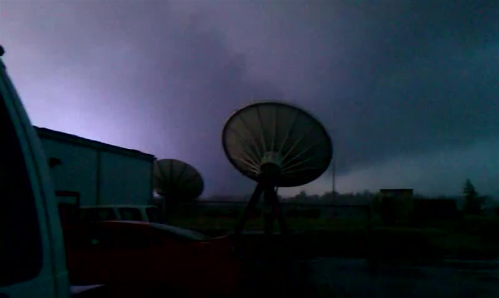
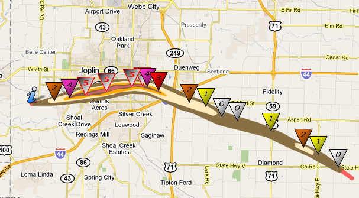
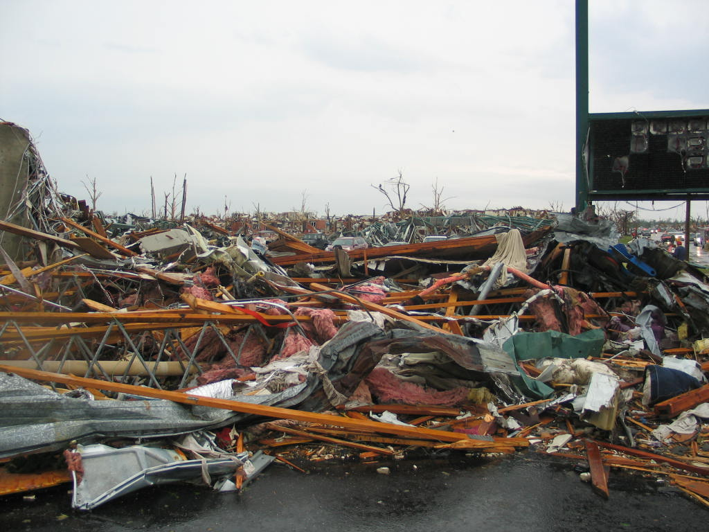

A city in the path.
The tornado, the warnings, the buildings and the people. Joplin's history needs all four.
On a Sunday afternoon, a supercell moving from southeast Kansas into southwest Missouri produced the tornado that crossed Joplin. The NWS account describes a hot, humid day and an EF5 tornado. The following investigation asked how such a severe loss of life occurred despite advance warnings. NWS anniversary account · NIST investigation

- Rating
- EF5 NWS assessment
- Whole path
- 22.1 miles NWS July 2011 report
- Maximum width
- Up to 1 mile Whole-event maximum
This is the first documented Joplin chapter. The historical source map is available below. Individual damage locations, a checked list of names and a timed visual reconstruction are still being researched.
The threat developed before the first siren.
The SPC had identified severe-weather potential more than two days ahead. On the morning of May 22, Joplin was included in a Moderate Risk area. The NWS review describes extreme atmospheric instability and sufficient low-level wind shear for tornadoes. Those conditions supported concern about dangerous storms, but an outlook could not identify a particular future street-level path.
At 1:30 p.m. CDT, Tornado Watch 325 included Joplin. Later, warning staff recognized tornado potential in the approaching storm. The NWS assessment also describes rapid development near the city's southwest edge and a delay in recognizing the tornado's exceptional size and violence. NWS assessment, printed pages 18–20
What was known, and when.
Times below are the event's local Central Daylight Time. They come from the NWS assessment's chronology, not from a new synchronization of every recording. The approximate touchdown time keeps that qualification. NWS assessment, printed pages 2–3
Explore this warning chronology on the shared clock. Each entry links to its report page. No geographic or camera registration is implied.
Tornado watch
SPC issues a watch covering southwest Missouri, including Joplin, through 9 p.m.
The first warning area
Warning 30 covers western Jasper County, including northeastern Joplin. It is not interchangeable with the next warning's coverage.
The first siren alert
A three-minute alert sounds for Jasper County and Joplin.
A warning including Joplin
Warning 31 covers southwest Jasper County and Joplin, northwest Newton County and southeast Cherokee County, Kansas.
Initial touchdown
The assessment places touchdown southwest of Joplin, approximately half a mile southwest of JJ Highway and Newton Road.
Second siren alert
Another three-minute alert sounds. The chronology places the beginning of EF4 damage near the approach to Schifferdecker Avenue.
Warning coverage extends east
Warning 32 includes southern Jasper County, Joplin, northern Newton County and western Lawrence County.
A path through the city and beyond.
The NWS report gives a whole-track length of 22.1 miles and a maximum width of one mile. It describes roughly six miles of EF4 and EF5 damage from near Schifferdecker Avenue toward Interstate 44. Those distances describe different parts of the event. They should not be substituted for one another. NWS assessment, printed page 1
{kind=link}

The catalogue retains the Jasper and Newton County records separately. Their aliases link them to this account without adding their death totals together or replacing their original ratings. Inspect the source records.
More than a wind-speed number.
NIST investigated wind loading, debris, building performance, emergency messages and the decisions people made. Its final report contains 47 findings and 16 recommendations. Understanding survival required examining those factors together. NIST final report overview
{kind=link}

{kind=link}
The damage photograph shows the outcome, but it cannot establish the original construction, anchorage, sequence of failures or wind speed by itself. NIST's retrospective describes failed windows at the hospital, poorly performing large retail buildings and roof loss at a nursing home. It also distinguishes ordinary refuge areas from engineered storm shelters. NIST's ten-year retrospective
Warnings were part of a longer decision process.
The NWS interviews found that many residents sought additional confirmation after an initial alert. Prior experience, conflicting information and the meaning people assigned to sirens all mattered. This does not explain every person's actions, and it does not mean those who died failed to act. The assessment explicitly records that some people reached appropriate shelter and still did not survive. NWS assessment, printed pages 2 and 4–10
Remembering those who died. Rest in peace.
Joplin's Cunningham Park contains a memorial to the 161 lives remembered by the city. Its plaque, trees and reflecting areas place the people at the center of the record. The city's anniversary plans describe a dedication of the plaque bearing their names. City of Joplin · Visit Joplin
The next step here is to check the names against the memorial and reliable individual records. Until then, this chapter links to the community's own remembrance. It does not infer a person's death site from a damaged building photograph or place a marker at an unverified address.
Why readers encounter 158 and 161.
The July 2011 NWS report records 158 direct fatalities and, in its footnote, four indirect fatalities as of that report. NIST's later investigation overview reports 161 fatalities, and the city memorial remembers 161 people. These are attributed records with different dates and accounting context. This exhibit preserves them without inventing a person-by-person reconciliation. Both federal accounts report more than 1,000 injuries. NWS · NIST · Memorial
Questions worth investigating.
Community discussions repeatedly ask why the toll was so high, why Joplin is difficult to see in recordings, and where original damage evidence can be found. These are useful research directions. They are not substitutes for survey records or a license to identify unnamed victims.
Why did a warned tornado kill so many people?
The warning sequence alone does not answer that. The NWS and NIST investigations examine message interpretation, building failure, shelter availability and exposure. A community discussion raises the question; the investigation reports above provide the evidence used here.
Can the tornado be recreated from its videos?
NIST describes heavy rain obscuring the tornado. A licensed still gives one view, not a continuous outline or wind field. The next visual work needs checked upload times, camera positions and overlapping views. A reconstruction will need to show its uncertain intervals rather than fill them with confident-looking artwork.
Where are the original damage records?
A community thread about missing DAT material is a lead, not evidence that records were intentionally removed. This chapter begins with the accessible NWS assessment and the NIST investigation. The preserved photograph is not presented as a located DAT observation.
Sources and research log.
First chapter reviewed September 21, 2026. The NWS map, chronology and selected report sections were read. The NIST publication overview and retrospective were read; the entire technical report has not yet been reviewed for this chapter.
- NWS Central Region Service Assessment, July 2011
Original warning chronology, whole-track measurements, direct and indirect death definitions, and interview findings. Printed pages 1–3, 4–10 and 18–20 support the passages above.
- NWS: Remembering Joplin Tornado, May 22, 2012
Storm setting and official retrospective context.
- NIST final investigation, March 26, 2014
Publication overview and entry point to NCSTAR 3. Lists the investigation scope, 47 findings and 16 recommendations.
- NIST Joplin investigation overview
Fatality and injury totals, damage context and recommendations. Preserve its accounting separately from the earlier NWS assessment.
- NIST: ten years after Joplin
Accounts of warning response, rain-obscured visibility, building failure and subsequent research. Its historical description of standards is not current construction advice.
- City of Joplin: A Day of Unity, March 23, 2012
Community remembrance and dedication of the plaque bearing victims' names.
- Visit Joplin: Cunningham Park remembrance
The plaque, 161 memorial trees and reflecting area. A memorial location is not a fatality location.
Read the claim and coverage record · Suggest a correction or original source